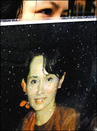

پذيرش > سایت نوشته ها > گلهاي اركيده براي ژاندارك برمه
 نگاهي به كتاب «راه من»، زندگي و انديشههاي «آنگسان سوچي» نگاهي به كتاب «راه من»، زندگي و انديشههاي «آنگسان سوچي»

 گلهاي اركيده براي ژاندارك برمه گلهاي اركيده براي ژاندارك برمه
15 خرداد 1387 - کانون زنان ایرانی - پروین امامی - نسخه قابل چاپ
«من به نبرد مسلحانه اعتقاد ندارم، زيرا اين سنت را به جاي خواهد گذاشت تا هركس كه سلاحهاي مجهزتري در اختيار دارد، قدرت را از آن خود كند. حتي اگر جنبش دموكراسيخواهي از راه توسل به روشهاي خشونتآميز به پيروزي برسد، باز در ذهن مردم اين انديشه را بهجاي خواهد گذاشت كه هر كه زورش بيشتر است، برنده نهايي است. اين تفكر، كمكي به برقراري دموكراسي نميكند.»
«سوآنگ سان سوچي»، زني كه ميتوان وي را مشهورترين مخالف سياسي در جهان امروز لقب داد، با اعتقاد به تئوري فوق، مبارزي است كه از دو دهه پيش رهبري جنبش دموكراسيخواهي در برمه ـ كشوري متلاطم در جنوب شرقي آسيا ـ را به عهده گرفته است.
آنگ سان سوچي ـ برنده جايزه جهاني صلح نوبل در سال 1990 ميلادي و بسياري جوايز ارزشمند جهاني ديگر ـ كه از سال 1988 بهطور مستقيم در صف اول نبردهاي سياسي مردم با ژنرالهاي حاكم بر كشورش قرار گرفته، براساس روشي نوين و مبتني بر آموزههاي طريقت بوديسم، «انسان محوري و تكيه بر شرافت سياسي» را دغدغه اصلي در پرداختن خويش به سياست ميداند و معتقد است:
«شرافت سياسي به معناي صادق بودن در عرصه سياست است. يكي از مهمترين چيزها براي فردي كه در اين عرصه كار و فعاليت ميكند، اين است كه وي هرگز نبايد مردم كشورش را فريب دهد. سياستمداري كه مردم را فريب ميدهد، فاقد شرافت سياسي است و سران حكومت كشور من اصلاً معناي شرافت سياسي را نميدانند، زيرا همواره مشغول فريبدادن مردم هستند...»
مردمي كه آنگ سان سوچي در دفاع از حقوق آنان، پايهگذار جنبش نوين دموكراسيخواهي بوده، شهروندان كشور برمه هستند؛ كشوري در همسايگي تايلند، هندوستان، لائوس و چين كه با در بر داشتن 146 نژاد و دويست لهجه و زبان گوناگون، يكي از متنوع و پيچيدهترين فرهنگهاي جهان را داراست.
برمه در دهه پنجاه ميلادي و در دوراني كه سابقه بيش از دو قرن مستعمره بريتانيا بودن را پشت سر ميگذاشت، توسط پدر خانم آنگسان سوچي به استقلال رسيد. پدر آنگسان، دانشجوي جوان دانشگاه رانگون (پايتخت برمه) در اواخر دهه سي ميلادي، رهبري نبرد استقلالطلبانه مردم عليه استعمارگران بريتانيايي را به عهده گرفت. وي براي ساقطكردن حكومت استعماري تحت فرمان بريتانيا، در هماهنگي با ارتش وقت ژاپن و پس از گذراندن دورههاي آموزشي، گروه «سيفرمانده» را راهاندازي كرد. اين گروه متشكل از سي فرمانده جوان برمهاي بود كه استقلال كشور، مهمترين آرمان آنها به شمار ميرفت. گروه يادشده موفق شد با بسيجكردن تودههاي مردم، استعمارگران بريتانيايي را از خاك برمه اخراج و استقلال ملي را به كشور اعطا نمايد.
پدر آنگسان پس از برپايي نظام حكومتي مورد تأييد مردم برمه، چند سالي بيش نتوانست به حيات سياسي خود ادامه دهد و در تاريخ نوزدهم ژوئيه سال 1947 توسط رقباي سياسياش ترور شد.
برمه از زمان استقلال تا سال 1961 توسط حكومتهاي دموكراتيك اداره شد، اما در سال 1962، ژنرال «نهوين» (رياست وقت ارتش برمه) دست به يك كودتاي نظامي زد و اداره كشور را در اختيار شوراي حكومت نظامي گذاشت.
استدلال كودتاگران در برچيدن بساط دموكراسي در برمه اين بود كه گروههاي قومي و نژادي متعددي كه در اين كشور زندگي ميكنند، ميبايد تحت حاكميت يك مركزيت قدرتمند قرار گيرند، در غير اين صورت كشور به ورطه فروپاشي و تجزيه درخواهد غلتيد. حكومت كودتا پس از روي كار آمدن، قانون اساسي كشور را معلق اعلام و نوعي سوسياليسم موسوم به «راه برمهاي بهسوي سوسياليسم» را بهعنوان ايدئولوژي رسمي خود اعلام كرد.
حكومت نظامي ـ سوسياليستي برمه در پي به دست گرفتن قدرت، تمام بخشهاي صنعتي، اقتصادي، بانكداري، حملونقل، بهداشت و آموزشوپرورش را از حيطه عمل بخش خصوصي خارج كرد و به تملك دولت درآورد. خروج از كشور نيز ممنوع شد.
در طي سالهاي 1947 تا 1976 نارضايتيهاي سياسي ـ اجتماعي شدت گرفت. رهبري و ساماندهي اين تحركات اعتراضي ـكه غالباً به شكل برگزاري تظاهرات سياسي در شهرهاي مختلف ابراز ميشد ـ عموماً به عهده دانشجويان برمهاي بود. حكومت نظامي در تقابل با فعاليتهاي معترضانه شهروندان، با شدت هرچه تمامتر اين تظاهرات را سركوب، هزاران نفر از فعالان سياسي را بازداشت و ساختمان اتحاديه دانشجويان رانگون را ـ كه مقر اصلي هدايت اعتراضات به شمار ميرفت ـ با انفجار ديناميت ويران كرد.
در طول بيش از يك دهه پس از آن، فعاليتهاي اعتراضي مردم عليه حكومت مركزي با فرازونشيب ادامه داشت تا در هشتم آگوست 1988، بزرگترين تظاهرات ضد حكومتي در تاريخ برمه به وقوع پيوست. در اين روز توده انبوهي از كارگران، كشاورزان، راهبان بودايي و كارمندان دولت به رهبري دانشجويان در سراسر برمه به خيابانها ريختند. بار ديگر پليس و ارتش به تظاهرات آرام و مسالمتآميز مردم ـ بويژه در پايتخت ـ حمله كرده و هزاران نفر را قتلعام كردند. از اين حادثه بهعنوان يكي از بزرگترين قتلعامهاي تاريخ معاصر ياد ميشود. بنا به اعلام منابع خبري متفاوت، آمار كشتهشدگان از سه تا دههزار نفر در نوسان است.
حاكمان نظامي علاوه بر كشتار خياباني، هزاران تن از مردم را نيز بازداشت و در زندانها تحت شكنجههاي سخت قرار دادند. خانم آنگسان سوچي، در پي بروز اين تظاهرات قدم در عرصه سياست گذاشت و طي مدتي كوتاه عملاً تبديل به رهبر جنبش دموكراسيخواهي برمه شد. آنگسان سوچي ـكه كتاب حاضر درباره انديشهها و زندگي اوست ـ در نوزدهم ژوئن 1945 در رانگون به دنيا آمد و در سال 1947، در حاليكه دو سال بيشتر نداشت پدر خود را در جريان ترور سياسي از دست داد. مادر وي پس از كشتهشدن همسرش توسط تروريستهاي جناح رقيب، در سال 1960 بهعنوان سفير برمه به همراه فرزندانش به هندوستان اعزام شد.
آنگسان سوچي كه بخشي از سالهاي نوجواني خود را در دهلي گذراند، در سال 1964 به انگلستان رفت تا در رشته فلسفه و علوم سياسي دانشگاه آكسفورد تحصيل كند. وي در سال 1972 با دكتر «مايكل آريس» از اتباع انگليس ازدواج كرد و داراي دو فرزند پسر شد.
آنگ سان سوچي در 31 مارس 1988 در پي تماس تلفني يكي از نزديكانش مطلع شد كه مادرش سكته قلبي كرده و در وضعيتي وخيم در بيمارستاني در رانگون بستري است. وي بلافاصله از لندن به كشور خود پرواز و بر بستر مادر بيمارش حاضر شد. طي ماههايي كه وي به پرستاري از مادر خود پرداخته بود، بحران سياسي در برمه ميرفت كه راه به رويارويي مستقيم مردم و عمال حكومت نظامي ببرد. سرانجام پس از وقوع تظاهرات مردم در هشتم آگوست 1988 كه توسط حكومت به خون كشيده شد، آنگ سان با حضور در تجمع پانصدهزار نفري مردم در پايتخت در تاريخ 26 آگوست، از حاكمان نظامي خواست به خواستههاي ملت گردن نهاده، از سركوب آنان دست بردارند و به حل مسالمتآميز بحران و شكاف عميق سياسي در كشور كمك نمايند.
وي در ادامه فعاليتهاي خود در روز 24 سپتامبر همان سال حزب «اتحاد ملي براي دموكراسي» را تأسيس و با ناديدهگرفتن ممنوعيتهاي حكومتي [ژنرالهاي حاكم تجمع بيش از چهار نفر را در سطح كشور ممنوع اعلام كرده بودند] در بيش از يكصد تجمع مردمي در سراسر برمه شركت كرد و در همه اين سخنرانيها از مردم خواست با استفاده از روشهاي عاري از خشونت به مبارزه آزاديخواهانه خود ادامه دهند.
حاكمان نظامي برمه كه براي حفظ خود، كوچكترين تحرك و فعاليت مخالفان سياسي را بهشدت در هم ميكوبيدند، بهموازات تثبيت بيش از پيش خود، شاهد بروز اختلافنظرها و تحولات خونيني در داخل رژيم هم بودند. بروز جاهطلبيها و زيادهخواهيهاي حكام نظامي عاقبت نظم پيشين حكومت را بر هم ريخت و از درون آن آشفتگيها، شورايي باعنوان «شوراي حكومتي احياي نظم و قانون» سر بر آورد كه مركب بود از 21 ژنرال ارتش برمه. اين شورا در نختسين ماده اعلام موجوديت خود تصريح كرد كه بهزودي يك انتخابات آزاد و دموكراتيك برگزار و سپس از قدرت كنارهگيري خواهد كرد. در ضمن همين شورا در سال 1989 نام برمه را به «ميانمار» و نام رانگون (پايتخت برمه) را به «يانگون» تغيير داد؛ تغييري كه با ناخرسندي و مقاومت منفي تودههاي مردم روبهرو شد.
آنگسان سوچي كه در فاصله حضور پانزده ماهه خود در كشور، براساس برنامههاي حزب متبوع خود (اتحاد ملي براي دموكراسي) به فعاليت علني و گسترده سياسي در كشور دست زده بود، سرانجام حوصله حكومت را سر برد و به فرمان دولت نظامي در بيستم ژوئيه 1989 در خانهاش زنداني شد. حكومت اعلام كرد كه دليل بازداشت خانگي وي «به خطر افتادن كشور» توسط آنگسان سوچي بوده است. به وي اجازه داده شده بود كه فقط با اعضاي نزديك خانوادهاش ديدار كند.
اين بازداشت خانگي به مدت شش سال ـ تا 15 ژوئيه 1995ـ ادامه يافت. در طول مدت بازداشت، ارتش برمه به وي پيشنهاد كرد كه آزادانه برمه را ترك كند، اما او اين پيشنهاد را نپذيرفت و ترجيح داد به صورت يك زنداني در برمه باقي بماند.
در دومين سال حصر خانگي وي، رژيم اجازه برگزاري انتخابات عمومي را صادر كرد كه طي آن حزب متبوع آنگسان سوچي با كسب 82 درصد آرا برنده قاطع انتخابات شد، اما رژيم حاضر به قبول نتيجه انتخابات و واگذاري قدرت به حزب برنده نشد. در پي بلندشدن صداي اعتراض سياستمداران پيروز در انتخابات، رژيم به رويكرد جديدي در راستاي برقراري هرچه بيش از پيش محدوديت براي آزاديخواهان دست يازيد و ضمن اصرار بر ادامه بازداشت خانگي آنسانگ سوچي، حق ملاقات او با اعضاي خانوادهاش را نيز نقض و ارتباط وي را بهطور كلي با جهان خارج قطع كرد. در پي اين اقدام و افشاگريهاي نهادهاي بينالمللي دفاع از حقوقبشر و دموكراسي، افكارعمومي بيرون از مرزهاي برمه كه با شگفتي وقايع درون اين كشور ديكتاتورزده را تعقيب ميكرد به تكاپو افتاد. دبيركل سازمان ملل متحد خواهان آزادي هر چه سريعتر آنگسان شده و مردم بسياري از كشورها نيز خواهان پايانيافتن حاكميت نظاميان بر سرنوشت مردم نگونبخت اين كشور شدند.
در چهاردهم اكتبر همان سال (1990) آنگسان سوچي رسماً برنده جايزه صلح نوبل معرفي و اعلام شد كه مبلغ يكميليون و سيصدهزار دلار جايزه نقدي به وي تعلق ميگيرد.آنگ سان در پي اعلام خبر فوق اظهار داشت كه از جايزه مذكور به منظور تأسيس يك بنياد بهداشتي و آموزش براي مردم برمه استفاده خواهد كرد. در دهم ژوئيه سال 1995 دوره ششساله بازداشت خانگي آنگسان سوچي به پايان رسيد و وي آزاد شد، اما مجاز به خروج از محدوده شهر رانگون نبود. در دهم اكتبر همان سال حزب «اتحاد ملي براي دموكراسي»، آنگسان را به عنوان دبيركل خود معرفي كرد و وي به عنوان تنها زن موجود در شوراي مركزي اين حزب، رهبري فراگيرترين تشكل سياسي برمه را به عهده گرفت.
سال 1996 و همزمان با رشد روزافرون فعاليتهاي اين حزب، موعد اعمال سختگيريهاي مضاعف رژيم عليه اعضاي حزب فرارسيد. در ماه مه همين سال بيش از 250 عضو حزب دستگير و زنداني شدند و مجدداً در ژوئن همان سال بيش از يكصدتن از دوستان و آشنايان آنگسان سوچي كه قصد داشتند براي شركت در جشن تولد پنجاه و دوسالگي وي به خانهاش بروند بازداشت و روانه زندانها شدند.
اكتبر سال 1996 انبوه فشارها و سركوبهاي اجتماعي ـ سياسي رژيم عليه شهروندان برمهاي چنان عرصه را بر دانشجويان مبارز و آزاديخواه تنگ كرد كه آنها مجدداً با برپايي تظاهرات متعدد و گسترده دانشجويي به اعلام مخالفتهاي سياسي با عملكرد نظاميان حاكم پرداختند. اين اقدامات و تحركات مشابه راه را براي تشديد هر چه بيشتر خفقان توسط حاكميت نظامي باز كرد و عمال رژيم در اواخر همان سال اقدام به بازداشت دويست فعال ديگر حزبي همفكر آنگسان سوچي كرده و وي را نيز دوباره محكوم به تحمل بازداشت خانگي كردند.
«شوراي دولتي احياي نظم و قانون» سرانجام در پي اعلام مخالفتهاي جهاني با رويكرد مستبدانهاش در اداره كشور، در 15 نوامبر 1996 خود را منحل و با تشكيل شوراي تازهاي موافقت كرد كه باعنوان «شوراي صلح و توسعه»، در كسوت كابينهاي جديد و با حضور 19 عضو و رياست يك ژنرال بر پا شد.
در روز 27 مارس 1999 دكتر مايكل آريس (همسرآنگسان سوچي) در اثر ابتلا به بيماري سرطان پروستات در انگلستان درگذشت؛ درحالي كه همسرش همچنان در بازداشت خودسرانه نظاميان حاكم بر برمه قرار داشت و همچنان به پيشنهاد مشتاقانه حاكمان براي خروج از كشور، «نه» ميگفت.
در سال 2001 درحاليكه آنگسان ـ كه با حفظ شمايل ظاهري يك مؤمن پيرو طريقت بودايي، همواره پوششي كاملاً ساده و بومي در بر دارد و البته هميشه از شاخه كوچك گل اركيدهاي براي زينت موهاي جمع شده در پشت سرش استفاده ميكند ـ همچنان در بازداشت خانگي به سر ميبرد، رسانهها خبر دادند كه سازمان ملل متحد از چند ماه پيش مذاكرات مخفيانهاي را با دوطرف درگيري (آنگسان و سران رژيم) آغاز كرده و در ژانويه سال 2002 نيز ديداري ميان آنگسان و ژنرال «تان شوئه» (حاكم نظامي برمه) انجام شد.
آنگسان كه به پيروي از تز مبارزه غير خشونتآميز همواره در تمام سخنرانيهاي خود اعلام كرده بود آماده مذاكره با سران رژيم بوده و هست، هدف مذاكرات خود با حاكم نظامي را «آزادسازي زندانيان سياسي» اعلام كرد.
در پي اين ديدار، رژيم شروع به آزادكردن زندانيان سياسي كرد و حزب «اتحاد ملي براي دموكراسي» نيز اجازه يافت كه 35 شعبه خود را در شهر رانگون بازگشايي كند. در ششم ماه مه همان سال نيز آنگسان از بازداشت خانگي رها و محدوديتهايي كه در مورد فعاليتهاي سياسي وي وجود داشت برطرف گرديد. البته مأموران رژيم در همه حال نظارت خود را بر فعاليتهاي او ملحوظ ميداشتند.
ژانويه 2003 در تاريخ مبارزات سياسي مردم برمه داراي ويژگي خاصي بود؛ چرا كه در اين دوران رژيم برمه براي نخستينبار به دو نماينده سازمان بينالمللي حقوقبشر اجازه داد كه از اين كشور بازديد كنند، هر چند اين بازديدها تغيير شگرفي در شيوه حكومتداري ديكتاتورهاي برمه ايجاد نكرد و در اواخر سال 2006 حكومت نظامي اعلام كرد كه دوره بازداشت خانگي آنگسان سوچي را تمديد كرده است.
براساس گزارشها و اخبار رسيده از برمه، وضعيت اين كشور در يكي دو سال اخير تغيير بخصوصي نكرده و نمودار مناسبات ملت و حكومت همچنان با فراز و فرود و تحت حاكميت نظاميان به پيش ميرود.
آنگسان سوچي كه در چنين شرايطي همچنان مقام رهبري مبارزات آزاديخواهانه مسالمتآميز و غيرخشونتبار ملت برمه را برعهده دارد، بهعنوان يكي از پيروان اين نظريه (مبارزه عاري از خشونت) در تبيين روشي كه براي برقراري نظامي مبتني بر دموكراسي در كشور خود در پيش گرفته، در گفتوگو با «آلن كلمنتس» (خبرنگار امريكايي و گردآورنده ده مصاحبه مفصل با آنگسان دركتاب حاضر) ميگويد: «روشهاي مبارزاتي غيرخشونتآميز، اقدامات سودمند و مفيدي هستند. شما براي رسيدن به هدفتان بايد كار و تلاش كنيد. روش غيرخشونتآميز به معناي اين نيست كه گوشهاي بنشينيد و اميدوار باشيد اتفاق مناسبي رخ بدهد. در اين نوع مبارزه صرفاً توسل به روشهايي مجاز است كه عاري از خشونت باشند. شيوه مبارزه عاري از خشونت به آرامي و آهستگي حركت ميكند. شايد به همين دليل است كه جوانان برمهاي احساس ميكنند اين شيوه چندان مؤثر و كارآمد نيست.» آنگسان سوچي كه باوجود ايجاد محدوديت، حصر خانگي و فشارهاي سياسي رژيم عليه خود و همفكرانش همواره كوشيده از ابزارهاي تبليغي مناسب براي ايجاد ارتباط با مردم كشورش بهره جويد، همه هفته سخنرانيهايي را برگزار ميكند كه تريبون آن در پشت نردههاي حياط منزلش واقع شده و شنوندگان، انبوه مردمي هستند كه در خيابان منتهي به منزل وي اجتماع كرده و با پذيرفتن خطر دستگيري احتمالي توسط رژيم، به سخنان وي گوش ميسپارند. گروهي از جوانان غيرمسلح نيز بهطور شبانهروزي با حضور در منزل وي، وظيفه حفاظت از رهبر خود را برعهده دارند.
رژيم نظامي برمه در راستاي مقابله و خنثيكردن انديشهها و حضور سياسي آنگسان سوچي، صرفاً به ايجاد تضييقات فردي عليه وي اكتفا نكرده و به منظور مقابله با حزب متبوع وي و نيز ترسيم چهرهاي دموكرات از خود اقدام به راهاندازي تشكلها و گروههايي فرمايشي كرده كه اين گروهها بعضاً به مثابه اهرم و گروه فشار، ضمن تبليغ به نفع رژيم، ايجاد اخلال و بر هم زدن تجمعات و فعاليتهاي حزب وي را نيز در فهرست شرح وظايف خود قرار دادهاند.
«فساد مالي» كه يكي از واقعيات كتمانناپذير تمام رژيمهاي ديكتاتوري و استبدادگر است، در برمه نيز بهسادگي جريان و شيوع دارد. بنا به عقيده مؤلف كتاب، رژيم برمه بهظاهر از فساد مالي براي نيل به دو هدف استفاده ميكند؛ نخست بهمثابه يك تاكتيك سياسي براي كنترل مردم و ديگري براي چپاول ثروتهاي ملي و انباشتن حسابهاي بانكي حاكمان.
آنگسان سوچي در تشريح ديدگاه سياسي خود براي مقابله با اين واقعيت معتقد است: «در يك نظام دموكرات ميتوان با ابزار نظارت و موازنه [تفكيك قوا] در مقابل فساد مالي در ادارات و سازمانهاي وابسته به حكومت ايستادگي كرد.» در كشوري كه به گفته رهبر جنبش آزاديخواهانه آن «فساد، امري رايج و مسري است و بيشتر كارمندان دولت رشوهبگير هستند»، راهكار پيشنهادي وي براي مقابله با فساد مالي چنين است: «طبيعتاً فساد مالي را نميتوان يك شبه محو و نابود كرد. بايد كارمندان دولت را مطمئن ساخت كه حقوق مكفي دريافت خواهند كرد. فساد مالي يك ذهنيت غالب در بيشتر كارمندان دولت است؛ ذهنيتي كه برآمده از اوضاع سياسي كشور است. اين ذهنيت بايد برطرف شود. حسابرسي مداوم بهترين راه جلوگيري از فساد مالي است...»
برطرف كردن ذهنيتهاي نادرست در توده مردم در زمينه فساد مالي و امور مادي، تنها وجه مورد تأكيد آنگسان سوچي نيست. وي همواره در سخنرانيهاي خود به ضرورت رويكرد مردم به «انقلاب معنوي» براي پيشبرد نبرد دموكراسيخواهانه خويش تأكيد كرده و در اين خصوص ميگويد: «يك انقلاب واقعي در درجه نخست بايد يك انقلاب روحي و معنوي باشد. سركوب شديدي كه ملت برمه را هدف قرار داده باعث شده تا ما موفق به برپايي يك انقلاب اجتماعي يا سياسي نشويم. ما آنچنان در محاصره انواع قوانين و مقررات ناعادلانه قرار گرفتهايم كه در عمل قادر به پيشبرد مؤثر يك جنبش سياسي يا اجتماعي نيستيم؛ بنابراين تنها راه براي ما ساماندهي جنبشي معنوي و روحي است.»
آنگسان سوچي كه در سال 1988 همزمان با چهل و چهارمين سال زندگي خود وارد فعاليتهاي سياسي آزاديخواهانه شد، پيش از آن و به مدت بيست و هشت سال را در خارج از برمه زندگي كرده بود. اين نكته همواره مورد مذمت و نكوهش حاكمان نظامي و در تبليغات آنها عليه آنگسان مطرح شده است. تجربه زندگي درازمدت در خارج از كشور، فرايندي بوده كه طي آن شكلگيري شخصيت فردي ـ اجتماعي آنگسان را دستخوش تحولاتي فرهنگي كرده است. وي در اين باره ميگويد: «من به دليل بيست و هشت سال زندگي در كشورهاي آزاد ياد گرفتهام كه به اين آسانيها از هيچ حكومتي نترسم. «ترس» يك عادت است و حكومتهاي سركوبگر مردم را به ترسيدن و مرعوبشدن عادت دادهاند. در كشورهاي آزاد و دموكرات پرسيدن «چرا؟» يك امر كاملاً عادي است. در چنين كشورهايي اگر فردي ـ حتي يك مأمور امنيتي ـ از شما بخواهد كاري را انجام دهيد كه غيرمنطقي به نظر ميآيد، شما حق داريد بپرسيد «چرا بايد اين كار را انجام دهم؟» اما در كشورهاي ديكتاتوري، پرسيدن سؤال ميتواند خطرناك باشد و به همين دليل است كه مردم بدون هيچ چون وچرايي از دستورات رژيم و مأمورانش اطاعت ميكنند. به اين ترتيب، كساني كه در قدرت هستند سركوبگرتر و مردمي كه تحت قدرت قرار دارند مرعوب تر ميشوند.»
آنگسان سوچي كه در عين داشتن گرايشهاي بوديستي، بخشي از دوران نوجواني و جواني خود را در هندوستان گذرانده و به باور برخي محققان، زندگي در اين كشور به تأثيرپذيري وي از انديشههاي مبارزاتي گاندي و رويكرد وي در نبرد سياسي عاري از خشونت انجاميده، خود معتقد است: «من خودم را نه يك سياستمدار گانديوار تلقي ميكنم و نه يك سياستمدار بودايي. البته من يك بودايي هستم و در طي تمامي مراحل زندگيام تلاش كردهام به اصول بوداييگري عمل كنم. واقعيت اين است كه من ستايشگر كساني هستم كه جنبش اوليه استقلال برمه را پايهريزي كردند. دليل اصلي من براي مخالفت با روشهاي مبارزاتي خشونتآميز اين است كه توسل به اين اقدامات باعث پايهريزي يك سنت غلط ميشود؛ سنت تغييردادن وضعيت سياسي از راه توسل به زور. اگر شما خواهان پايهريزي يك سنت قوي از دموكراسي در كشور هستيد، يكي از اصول اساسي براي آفريدن اين سنت، ايجاد تغيير سياسي صلحآميز از طريق بهشمار آوردن اراده مردم است؛ ارادهاي كه خود را از طريق صندوقهاي رأي آشكار ميكند و نه از طريق نيروهاي مسلح. ما كه خواهان تغييردادن سيستمي هستيم كه معتقد است «حق با كسي است كه زور دارد»، بايد اثبات كنيم «حق» برتر از زور است.
«.... نبرد براي دموكراسي نبردي براي بهبود زندگي روزانه ماست و نبردي است دائمي و توقفناپذير... من ميدانم كه رژيم توانايي اين را دارد كه هر بلايي كه دوست دارد بر سرم بياورد و با اين حال هيچ ترسي از آنها ندارم. نترسيدن من ناشي از ناآگاهيام نسبت به اين توانايي رژيم نيست. نترسيدن من ناشي از عدم نفرت من به رژيم است. ترس و نفرت دست در دست هم جلو ميروند...»
آنگسان سوچي در كتابي كه بخشي از آن به نوشتههاي خودش پيرامون مسائل فرهنگي، هنري و اجتماعي برمه اختصاص دارد و بخش ديگر آن شامل چند گفتگو با خبرنگار امريكايي است ميكوشد به بازنمايي چهره خود بپردازد؛ چهره آرام و خندان زني كه با اعتقاد به تحقق حتمي آرمانهاي ملت برمه، روي در روي حاكميت ژنرالهاي مسلح ايستاده و ضمن دعوت هميشگي آنها به بردباري و پرهيز از تكرار تاريخ، آزادي انديشه و فعاليت سياسي شهروندان را متضمن امنيت و برپايي يك جامعه دموكرات ميداند.
كتاب «راهمن» در بردارنده متون دو كتابي است كه در سال 1995 چاپ و در اختيار همگان قرار گرفته است. كتاب نخست باعنوان «نامههايي از برمه» شامل مطالبي است كه در 52 بخش توسط آنگسان سوچي ـ كه از وي بهعنوان «ژاندارك برمه» هم ياد ميشود ـ درباره فرهنگ، هنر، سياست و زندگي مردم برمه و بنا به درخواست يك روزنامه ژاپني در سال 1995 پس از آزادي وي از دوره اول بازداشت خانگي نوشته شده و كتاب دوم باعنوان «صداي اميد» مجموعه گفتوگوهايي است كه آلن كلمنتس امريكايي در همان سال در رانگون با آنگسان سوچي انجام داده و شامل محورهاي متعددي از جمله بيان ديدگاههاي وي پيرامون مبارزه سياسي صلحآميز، مبارزه مسلحانه دانشجويان برمهاي، موادمخدر، مديتيشن، وجود سانسور در برمه، جايگاه ارتش ملي و... است.
كتاب «راه من» به گفته مترجم آن نخستين مجلدي است كه به فارسي، آنگسان سوچي را به خوانندگان ايراني معرفي كرده؛ رهبري كه پرداختن به محرومان و زندانيان در بند همواره يكي از دغدغههاي او بوده و در يكي از نوشتههاي خود براي روزنامه ژاپني در همين باره چنين نگاشته است: «نميدانم چه تعداد از زندانيان سياسي برمه در شبهاي زمستان از فرط سرما بيخواب ميشوند؛ نميدانم چه تعداد از آنها كه در سنين پايان عمر هستند شبهاي زمستان از درد استخوان به خود ميپيچند و نميدانم چه تعداد از آنها در اين شبهاي سرد خواب يك آشاميدني داغ را ميبينند. كمكي از دست من ساخته نيست، اما حداقل ميتوانم به آنها فكر كنم و به يادشان باشم...»
*اين كتاب با ترجمه بيژن اشتري، توسط انتشارات مهد فرهنگ در پاييز 1386 انتشار يافته است.
منبع: چشم انداز ایران - شماره 49 اردیبهشت و خرداد ماه 1387
کانون زنان ایرانی
ارسال به
بالاترین
،
توییتر
،
فریندفید
،
فیسبوک
در همين بخش :
 یک خبر تلخ؟ یک قانونشکنی؟ یک تصمیم بخشنامهای جدید؟ یک خبر تلخ؟ یک قانونشکنی؟ یک تصمیم بخشنامهای جدید؟
چرا بایست به سکسوالیته پرداخت؟ / نفیسه آزاد
آزارجنسی خانگی؛ «قربانی» نه، «نجات یافته»
زنان، بزرگترین بازندگان بهار عرب
سانسور از دیدگاه جنسیتی/الهه امانی
ديگر بخش ها :
طرح یک میلیون امضا
|
مقالات
|
سایت نوشته ها
|
اخبار
|
گزارش كمپين
|
گفت و گو
|
علیه سکوت
|
كوچه به كوچه
|
نامه های شما
|
گزارش ویژه
|
گفتگو با اعضا
|
ویژه سالگرد کمپین
|
تصویر برابری
|
دل آرام علی
|
تریبون
|
مقالات
|
تاریخ شفاهی
|
خارج از چارچوب
|
کتابخانه
|
درباره کمپین
|
کمپین در شهرها
|
کمپین در بند
|
صدای تغییر
|
ویژه 22 خرداد
|
لایحه حمایت از خانواده
|
گالری
|
عشا مومنی
|
امیر یعقوبعلی
|
خدیجه مقدم
|
راحله عسگری زاده و نسیم خسروی
|
پروین اردلان،جلوه جواهری، مریم حسین خواه، ناهید کشاورز
|
زینب پیغمبرزاده
|
سعیده امین، سارا ایمانیان، محبوبه حسین زاده، ناهید کشاورز و همایون نامی
|
احترام شادفر
|
نسیم سرابندی زاده،فاطمه دهدشتی
|
وبلاگ مهمان
|
پرونده خرم آباد
|
دستگیری ها
|
مریم مالک
|
پرستو اللهیاری
|
مهرنوش اعتمادی
|
سمیه رشیدی
|
Other Languages
|
همراهان
|
«فراخوان کمپین ده روز با بهاره هدایت»
| English
|